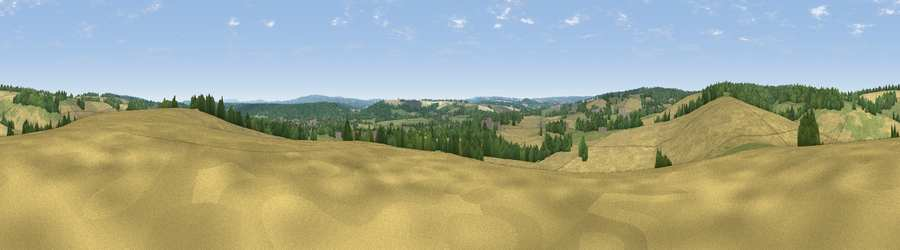

Viewpoint near Bentley
#30946 in England · top 26% of its area beats it · near Bentley · access?Where it is
The exact computed spot (SU 77325 44625). Click the marker for map links.
Public access: no public right of way or access land is recorded at this exact spot — it may be on private land. Computed from Natural England's CRoW access layer and OpenStreetMap rights of way — not the legal definitive map. Always verify locally.
The view, rendered

A 360° render of this exact spot computed from the terrain model, tree cover and land cover — summer colours, afternoon light, calibrated against photographs of famous viewpoints. Real trees, hedges and buildings will differ in detail.
The panorama
Grey silhouette: terrain skyline in each direction (720 bearings, Earth curvature and refraction included). Dashed green: skyline with trees (+15 m) and buildings (+8 m) as obstacles. Blue strip: how far the ground is visible on each bearing.
Where the view opens
Wedge length = distance to the farthest visible ground on that bearing (vegetation-aware). Rings at 10, 25 and 50 km.
What fills the view
56% cropland · 23% grassland · 20% woodland · 1% built-up
Angular shares of the visible panorama (visual magnitude), not map area. Landscape diversity 0.45 (0–1 Shannon).
Key numbers
More beautiful places nearby
The staircase of upgrades: each row has a higher view potential than everything closer. Driving times are estimates from straight-line distance, calibrated against real road routing — check an actual route before setting out.
| Place | Direction | Drive | Score |
|---|---|---|---|
| Horsedown Common | N · 4 km | ~8 min | 54.8 |
| Noar Hill | SSW · 13 km | ~24 min | 59.8 |
| Temple of the Four Winds | SE · 16 km | ~28 min | 65.4 |
| Viewpoint near Steep | S · 18 km | ~31 min | 68.7 |
| Viewpoint near Fernhurst | SE · 21 km | ~36 min | 75.1 |
| Viewpoint near Buriton | SSW · 25 km | ~40 min | 75.3 |
| Viewpoint near Buriton | SSW · 25 km | ~40 min | 80.0 |
| Beacon Hill | S · 26 km | ~42 min | 85.8 |
51.19562, -0.89477 · source: screening · position refined by local search. Computed location — check access rights before visiting.